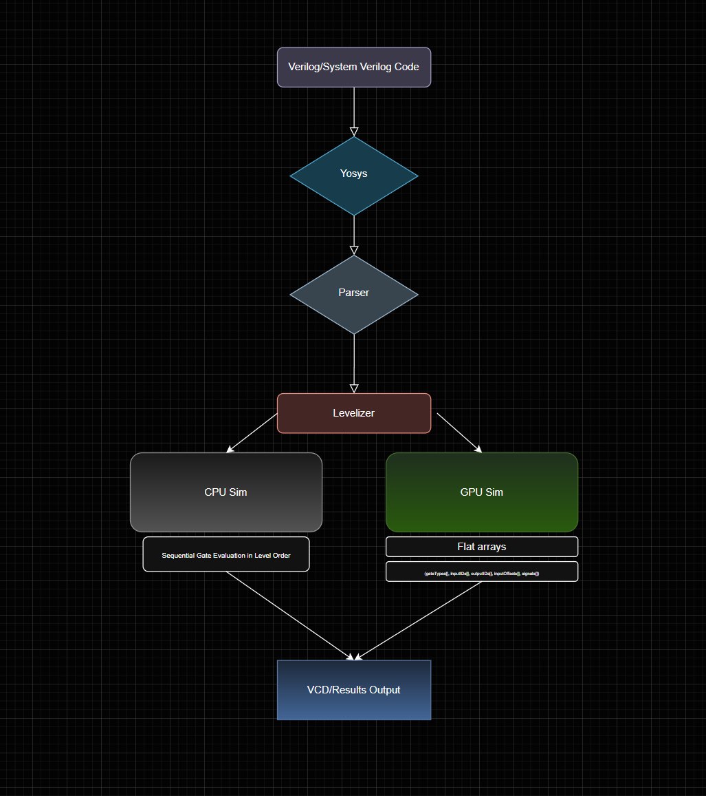
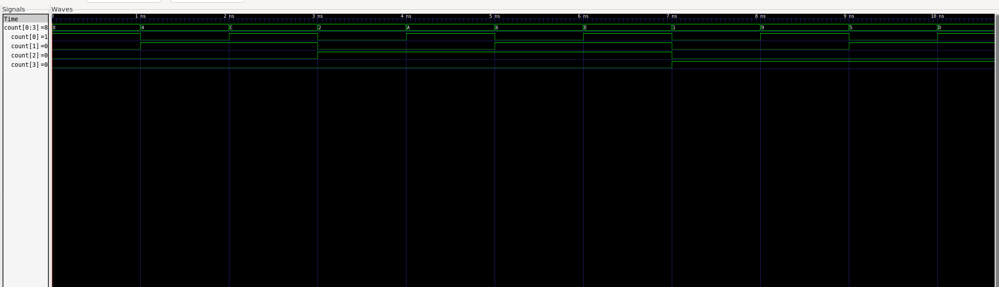

Projects / 03
A logic simulator on the GPU
A GPU has thousands of cores, so gate-level simulation should be fast on one. My first version was 2.5× slower than the CPU. Fixing that taught me more than the simulator did.
The idea
Gate-level simulation evaluates every logic gate in a circuit, every clock cycle. Inside one "level" of logic, no gate depends on another, so in principle they can all be evaluated at the same time. I wanted to find out how much that parallelism is actually worth on real hardware, using a real circuit: the 16-bit pipelined CPU I'd built the semester before.
How it works

- SynthesizeYosys flattens the CPU into single-bit gate primitives: 20,170 gates and 8,676 flip-flops.
- ParseA C++ parser reads the structural netlist into gate and wire data structures.
- LevelizeKahn's algorithm assigns every gate a dependency level, so no gate is evaluated before its inputs are ready.
- Flatten for the GPUThe netlist becomes plain integer arrays (gate types, input IDs, output IDs, offsets, signal values) so GPU threads read memory in a predictable pattern.
- Simulate and dumpThe CPU or GPU runs the cycles; results go to a VCD file I inspect in GTKWave.
Why the GPU lost, then won
Version 1 launched one CUDA kernel per logic level, per cycle: about 500,000 kernel launches for 10,000 cycles. Each launch only had a few hundred gates of work, so the GPU spent its time being scheduled instead of computing.
Version 2 launches one persistent kernel for the whole simulation. Threads use
grid-stride loops to cover any number of gates per level, and synchronize between levels on the
device with Cooperative Groups (grid.sync()) instead of returning to the host. That cut
GPU runtime by 4.7× and made it about 2× faster than the CPU at 100,000 cycles.

The bug that only showed up on the GPU
For a while the GPU gave slightly different answers from run to run. The cause wasn't in my CUDA
code at all. When Yosys flattens submodules, internal wires in different modules can end up with the
same auto-generated name, which silently creates nets with more than one driver. On the CPU the
evaluation order happened to hide it; on the GPU, which thread wrote last changed every run. Adding a
Yosys autoname pass after all the other transformations fixed it, and I verified a
bit-exact match between CPU and GPU on every signal's final state.

What I learned
More cores don't help if you spend your time scheduling them.
Speedup depends on how wide the circuit is, not just how big it is: a narrow, deep circuit can't keep the GPU busy. And nondeterminism is a symptom, not a bug report; the real problem was upstream, in the netlist.